Switzerland & Liechtenstein
June 30 – July 3, 2023

From June 30 to July 3, 2023 we traveled through Switzerland and Liechtenstein.
The days covered alpine lakes and mountain walks, a chairlift ride, the Floomzer alpine coaster, and a stop at Läderach.


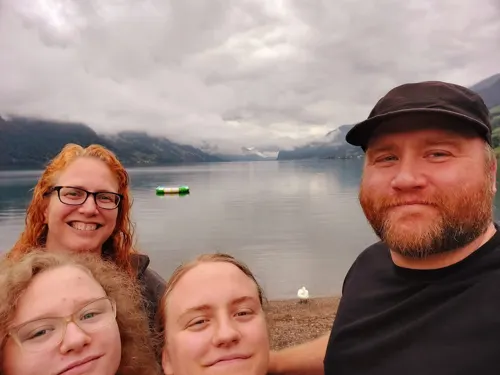

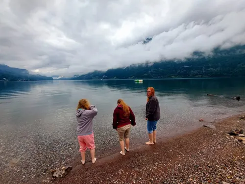

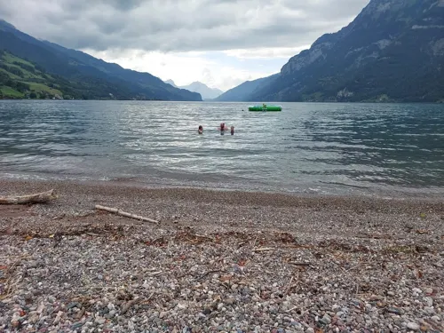

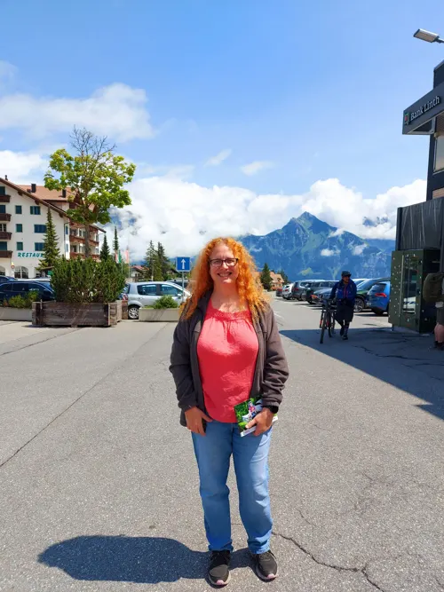

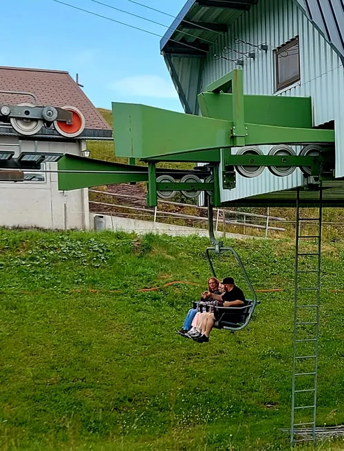

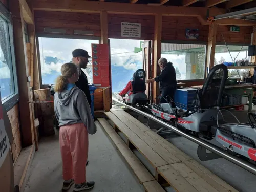

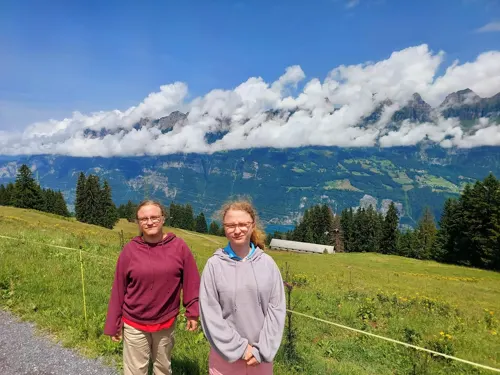

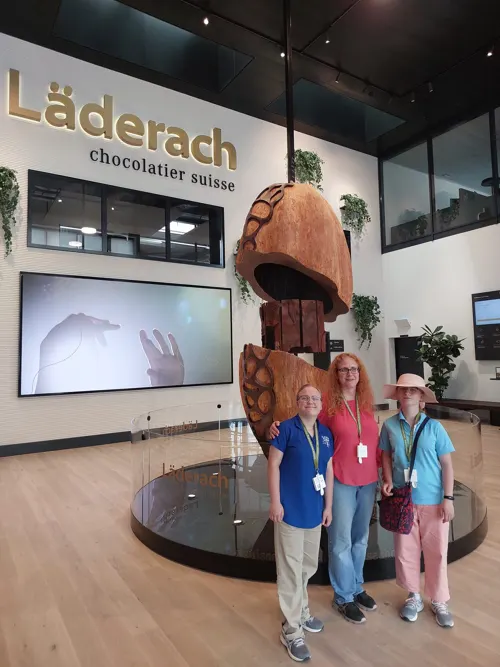

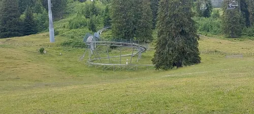

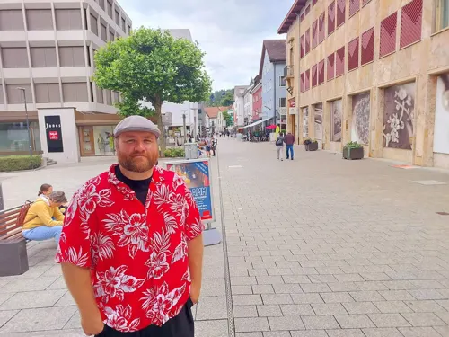

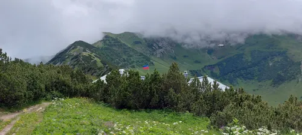

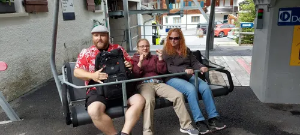